广 西 地 貌
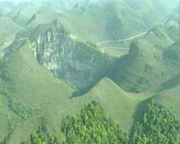
广西在区域上属云贵高原向东南沿海丘陵过渡地带，形成了复杂多样的地貌类型，有山地、丘陵、台地和平原等。广西是中国主要的岩溶发育区，峰林是发育完美的热带岩溶地貌的典型代表，广西洞穴众多且景观优美，素有“无山不洞，无洞不奇”之称。
“山篇”
以浓郁的写意风格，雅致的人文景观，意味深长的造型抒发如山的情怀
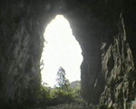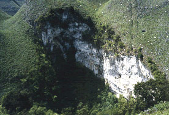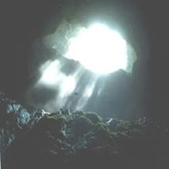
说乐业大石围是进入地球的心脏之门，是一种很诗意的说法，但它的确说明了乐业大石围的险峻和独一无二。 乐业大石围天坑的发现让世界为之震惊。随着中外科学考察队的多次探索和考查，乐业大石围天坑群，已渐渐被撩开神秘的面纱。它集独特的溶洞与原始森林和珍稀动植物于一体的竖井，洞中有洞，洞内藏河，冷热交汇的两条地下暗河，形成了独特奇绝的景象。
大石围位于乐业县同乐镇刷把村的北边，属红水河南端的干热河谷地带，经有关岩溶地质专家和岩溶洞穴专家实地考证，大石围的地下原始森林面积为世界第一，深度约为613米，居世界同类大型岩溶漏斗第二，长约600米，宽约420米，其容积约0。8亿立方米，也处于世界第二位。
雄伟壮观的大石围在普遍秀颀纤柔的南方风景中不是很多见，它好象是南方景致中的一个另类。给柔媚以粗犷，给婉约以大气，给平实以高昂，才会深得自然之韵律的丰富和完整。从大石围下来，漂流布柳河是个不错的选择。当地船工介绍，从乐业东拉码头顺流而下，一个多小时就能到达与天峨县交界的天生桥，那里景色特别美。
站在大石围海拔1660米的西峰之上，白云就在头顶，无边无垠的云朵竟然也组合成一个巨大的圆型天洞，与地下的"天坑"遥相呼应，这是天与地的对话么？云朵的身姿在连绵的群峰间投下婀娜的剪影，她的水袖轻拂之处，浓荫匝地，微风吹送。由峰巅之上的观景台向下俯瞰，山势险峻，洞底深不可测，再向谷底遥探几眼，竟然有几分晕眩的感觉，好似双脚立刻腾空，没了根基一样。基乐业县以大型天坑群，溶洞群，地下河，和原始森林以及珍稀动植物为特色的旅游景观正在成为中外旅游者向往的新热点。眼前豁然出现的一座巍峨的山，山中似乎还有一道缝隙，那缝隙中还透着光亮。
经有关岩溶地质专家和岩溶洞穴专家实地考证，大石围的地下原始森林面积为世界第一，深度约为613米，居世界同类大型岩溶漏斗第二，长约600米，宽约 420米，其容积约0。8亿立方米，也处于世界第二位。大石围西峰之上似乎可看到了穿越地球心脏的垂直力量，那是地球的"纬线"；追随天生桥的足迹可感受了地壳运动的血脉相连，这是地球的"经度"。
一天之间，我们穿越了经天纬地。还是借山为樽不得，掬水为酒，举案齐眉，向神奇的造物主俯首折腰吧。晚上宿在河边的一个村庄，村里的男女老少热情纯朴，香醇的米酒满满一壶似有汽油桶那么大，主人杀鸡宰鸭盛宴款待。游人入乡随俗，与山民大碗喝酒，大块吃肉，山歌互答，觥影交错，要没那么点酒量的人，男儿血性就少了一半，对酒厂浅尝即止的人在这种"磨砺"中也会海量无边。
酒过三旬，皎洁的月亮，从房后的山岫处高高地升上了天空，屋前撒满一地的月光--_布柳河村中的米酒可是好东西呵，尽了兴的游人醉眼迷朦。"酒入豪肠，七分酿成了月光剩下三分啸成剑气绣口一吐半个盛唐"。台湾诗人余光中早把这酣畅淋漓的酒性唱成了豪迈的经典。
今年中，广西乐业科考队对大石围天坑附近的神木天坑进行了考察，考察发现，这里植物茂盛，具有原始生态植物基因库的意义。神木天坑的植被遮天避日，密林中不时传来鸟儿的叫声。天坑底部的湿度很大，到处都长满了各类苔藓，由于光照不足，这里的植物变得十分脆弱。 这里到处都生长着形态各异的蕨类。
美丽的壮族村庄
这些蕨类植物不仅叶面大，颜色深，而且与附近天坑生长的蕨类有明显的不同。据科考队员姚梦琴介绍， 这里面的植物也是一种蕨类，跟刚才那边拍的（鸟巢蕨）是一个种类的，但是它的背面的孢子囊不一样，刚才那个是圆形的，像鸟巢一样的，这个是纵横的纹路，说明整个神木石围的植物都是比较原始的。专家指出，天坑底部独特的小气候和地形环境，使这里的植物形成了自己独特的形态，这些植物一旦脱离天坑这个环境，可能就完全不是这个样子了。专家认为，神木石围是一个非常典型的原始生态植物基因库，研究这些植物的特性具有重要的学术价值。
天坑群景观最奇绝的要数白洞天坑，它除与其他天坑一样具有地下原始森林与地下暗河外，还与相隔1.1公里外的天星冒气洞相通，形成了一种自然界最奇特的呼吸奇观，即一边洞口出气，另一边洞口吸气。从洞口冒出的白烟，在方圆几百米外都能看得清。冒气洞为什么会冒气而其它的天坑洞穴却没有这种景象，专家仍无法解说。
天坑群的另一独特地貌是百朗大峡谷。现在已知百朗大峡谷与大石围底部的地下暗河相通，峡谷长４公里，谷两边为１０００多米高的山峰石壁，紧夹一线蓝天，谷中洞穴里有千奇百怪的钟乳石和一些生物化石。不久，国家重点建设工程龙滩水电站水库区将淹至峡谷口处，库区水位会否将这些宝贵的钟乳石洞淹没？由于百朗大峡谷与大石围相通，抬高的水位会不会倒灌进大石围，淹没围底那些珍贵的原始森林？有关专家还在进一步研究,此外，除了已发现的天坑，乐业县境内是否还存在着不为人知的天坑？在这片神奇的崇山峻岭下面，是否还有正在继续坍塌的溶洞在某一天突破崩陷，成为新的天坑呢？新的谜团又摆在了喜欢探秘的旅游者面前。
中国洞穴研究会会长朱学稳教授说，中外探险队上月在广西百色乐业大石围天坑群中发现的地宫容积为世界第二大，仅次于马来西亚沙捞越的一座地宫。关于这样一个地下世界我国古代也曾有过不少描述，例如地府洞天，那是一些不为人知的神仙住的地方，说得更甚一点，那里就是阎王殿，总之一说到地下的天坑和洞穴就会让人想到那是一个阴森冷酷的地方，确实，我们对那里的了解实在是太少了。
天坑和地下洞穴就是我们所说的“喀斯特”地区，喀斯特听起来还是很奇特的，它是一个外来语。在南斯拉夫西北部塞尔文尼亚共和国境内有一个高原叫喀斯特，那里是一片石灰岩裸露的地区，光秃秃的石头呈千奇百怪的形态，表现出与众不同的地貌景观。这个术语，起初是在欧洲，然后在世界各地都得到承认和广泛使用。
我国广西乐业县的天坑群是一个世界上极为罕见的喀斯特溶洞群，当地人把它们叫做“大石围”。它形成于6500万年前，形状犹如一个个巨大漏斗，隐藏在群山峻岭之中，经过初步考察已经认定这是目前世界上最大的天坑群。
目前世界上只有俄罗斯、澳大利亚、巴布利亚几内亚发现过天坑，近年来重庆南川地区发现过三个深约300米的天坑。而此次发现的乐业天坑群，由近20个天坑组成，最深的达600多米，浅的也有300多米。乐业天坑群几乎囊括了各种类型的天坑和溶洞的景观，具有极高的科考、探险价值，被专家称为“天坑博物馆” 和“世界岩溶圣地”。
四壁陡直的天坑，对于人们来说，简直就是绝境，但只有这种小东西能够展开双臂自由地飞入神秘的天坑底部。这只探险队没有白叫“飞猫队”。
他们经过千辛万苦还真下到了最深的天坑底部。但是他们也为此付出了沉重的代价，一名飞猫探险队队员，当地的武警战士在进入天坑底部的溶洞中地下暗河1公里处。 不慎跌入看似平静却急流汹涌的旋涡中，顷刻就消失得无影无踪。
大石围天坑是乐业天坑群中最大的一个，与世界上所有天坑迥然不同的是，它现在还处在旺盛的活动期，这里存在着一个几千万年前就生长繁衍与世隔绝的古生物群落，是当今世界上绝无仅有的远古时期生物标本。目前世界上只有大石围天坑群拥有这样独特一个的动物、植物基因库。大石围天坑底部是一个集地下原始森林、珍稀动物、独特溶洞和地下暗河于一体的独特区域。
随着地质的变迁、气候的改变、以及人为活动的破坏，斗转星移间，众多远古时期的植物或灭绝或变异，而在布柳河，却有大批植被还保存着多样性和原生性。无疑为我们保存了一个原始生态的基因库，这对今后物种的研究和开发都会产生不可估量的重要作用。
中国科学院和中国洞穴协会的专家们最终确定我国广西乐业天坑群是世界规模最大的天坑群，已发现天坑23个，其中最大的大石围天坑底部分布的原始森林面积为世界第一、垂直高度为世界第二。专家还测量了大曹溶洞地下大厅，长300米、宽200、最高处达260米，对比分析后确定大曹溶洞地下大厅是我国最大的地下大厅，也是世界第二大地下大厅，完全可以放得下一个北京工人体育场，地下大厅顶部距离外界地面只有20米，是一个正在形成的天坑。有关专家表示这一发现对于研究天坑溶洞的成因构造提供了最直观的科学依据。这次科考队在成功下达最深天坑——大石围600米的底部后，发现一批神秘的洞穴动物，其中的两类动物已被中科院专家认定是新的物种。分别被命名为天坑中国溪蟹和张氏幽灵蜘蛛。值得一提的是天坑中国溪蟹是我国迄今为止发现的唯一专门生活在洞穴中的蟹类。还有十几种动物标本由于形态特殊，难于分类，正在分类鉴定中。中科院动物所的研究员陈国孝告诉记者：它的发现对研究和防治流行于我国南方的肺吸虫病有着极高的医学价值。
在天坑这个封闭的环境中还发现许多史前时期的珍稀植物如三叶梭，在大石围天坑底部发现了一片的原始蕨类桫椤林，数量达60多棵。专家表示，天坑下生存的动植物不仅是保存了一个古生物的基因库，也是研究古环境、古气候难得材料。这些对乐业天坑群地区申报世界自然遗产来说都是举足轻重的材料。
猫儿山自然保护区
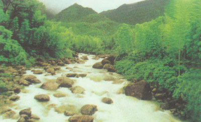
猫儿山十里峡谷
猫儿山位于广西东北部，地跨兴安、资源、龙胜3县，距桂林市122公里；海拔2141．5米，相对高度1862米，是华南最高山脉越城岭的主峰，因山形如猫而得名。整个保护区地势呈葫芦形，中部高，四周低。向东南倾斜。中部的八角田，南部的通大坪，西部的三十六包为山间盆地，其余都是山峦连绵的峰丛地带。海拔在2000米以上的山有猫儿山等10座，1000米以上的有戴云山、大竹山、鸡公山等68座。面积近2．67万公顷，其中划为国家保护区有7160多公顷。
猫儿山山体古老，地形复杂。气候温和，水源充足，土壤肥沃，植物种类繁多。随着海拔的增高，气温降低，自然形成不同类型植物的生长地带。海拔400～ 1200米为常绿阔叶林和常绿针阔叶人工林。海拔900 米以下主要呈亚热带喜暖种类及少数热带性较强的植物，如润楠属、毛桂、榆木、厚皮香，宛田红花油茶、酸枣。长蕊杜鹃和内岭杜鹃等；海拔900～1200米主要是亚热带常见植物，如乔木的罗浮栲，粤桂柯、银钟树、鹅掌楸、化香、青钱柳、山合欢等，以及草本的兴安梅花草、獐牙菜、西南马先蒿等，此外还有少数温带落叶树种如水青冈、雷公鹅耳枥等。海拔1200～1800米为落叶常绿阔叶混交林，多为亚热带和温带树种交杂区域，有桂南木莲、阔瓣白兰花、交让木、枫榆桂、铁椎烤、亮叶栎，兴安马银花、光皮桦、白灯笼、华中山柳、广东木瓜红等，此外还有一些温性针叶树种如长苞铁杉、广东五针松和江南油杉。 1800～2000米为常绿阔叶林和常绿阔叶针叶混交林，如常见的亚热带耐寒植物和温性针叶阔叶植物，如假地枫皮、资源木姜、黔周、青岗栎、包果柯、华丽杜鹃、厚叶杜鹃、北汇杜鹃，美丽马醉木、山桂花和尖尾筱竹等， 2000米以上为山顶灌丛矮林，主要是一些温带植物，如蚝猪剌、西南山茶、灯笼树、少花灯笼树，心基杜鹃，猫儿山杜鹃、红果树、草地、观音竹以及丫蕊花、日本黎芦、琴叶飞莲、多星韭、吊兰龙胆等。
猫儿山植物区系中裸子植物有6科8属12种，占我国野生裸子植物的54．5 ％，占广西野生裸子植物的75％。其中南方铁杉、长苞铁杉和红豆杉等树龄均在两三百年以上。被子植物有10科37属106种。樟树起源于古南大陆，在猫儿山中占优势。鹅掌楸是著名的第三纪残遗植物，也是木兰科中最有代表的原始种类，在猫儿山西
北沟谷中保存有一定的数量。珍稀的品种还有木通科原始种类的代表猫儿屎，广西新纪录植物红叶木姜子、鸦椿卫矛、长蕊杜鹃、啮蚀状英莲、异叶败酱等 20 种。198l年后，尚发现资源木姜等10种，特有植物34属38种，如南方铁杉、长苞铁杉、广东五针松、红豆杉、黄连、金花猕猴桃、宜昌橙、南华木、青钱柳。马尾树和银钟树等。
猫儿山还有不少用途特殊、经济价值颇大的植物，如罗汉果、灵香草、毛竹、银杏、六峒茶、中华猕猴桃，以及天麻、三七、黄连等。珍贵动物也不少。
猫儿山又是漓江、资源资江、浔江广西三支河流的发源地。
北流勾漏洞
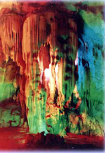
勾漏洞风景名胜区位于广西东南，北流市东面五公里处，在国道“324”线的丽梧公路旁边，南依圭江，占地面积为204公顷，是属于省级风景名胜区。
道书称全国道教“三十六洞天”中“第二十二洞天”的勾漏洞，由宝圭、玉阙、白沙、桃源四洞组成，两座大山把四洞连通一线，全长一公里，勾、曲、穿、漏奇景自天成，可与桂林的芦笛相媲美。洞内石柱、石笋及各类造型奇特的钟乳石纵横交错，千姿百态，在五颜六色的灯光照射下，益显扑朔迷离，瑰丽妖娆。洞前，亭台楼阁，雕 画栋；绿树婆娑，曲径通幽；湖光潋艳，气象万千；洞前石壁，各类石刻琳琅满目，其中唐代名将李靖的名作，南宋抗金名将李纲的题咏和当代文豪郭沫若等人的真迹镌刻于此，给勾漏仙景倍添艺术魅力。勾漏洞方圆数里，奇山秀水，风光旖旎，形成一个规模宏大，蔚为壮观的勾漏洞风景名胜区。
丹霞之魂八角寨
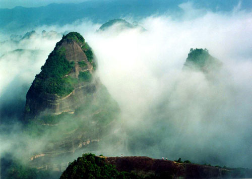
广西资源的八角寨又名云台山，主峰海拔814米，因主峰有八个翘角而得名，其山势雄浑博大，气势非凡。丹霞地貌发育丰富程度及品位高雅，被有关专家誉为“丹霞之魂”。“群螺观云”等130多处绝景完全出自于大自然的鬼斧神工，或惊险万状、或栩栩如生。山顶有一个 3000多平方米的平台，有宋元时代始建的天心寺。登高鸟瞰，经常可见云海、云带、云湖等奇景，凡登临绝顶者，莫不击掌称绝，叹为观止。
丹霞地貌
丹霞是地理学上很重要的名词。它是指红色砂岩经长期风化剥离和流水侵蚀，形成孤立的山峰和陡峭的奇岩怪石，是巨厚红色砂、砾岩层中沿垂直节理发育的各种丹霞奇峰的总称。主要发育于侏罗纪至第三纪的水平或缓倾的红色地层中，以中国广东省北部丹霞山最为典型，故名。上世纪30-40年代，原中山大学地质系陈国达教授提出了“丹霞地形”的概念并推动了华南丹霞地形的研究；40-70年代末，原中山大学地理系吴尚时、曾昭璇教授将红层地貌作为独立的岩石地貌类型进行了系统的研，并使“丹霞地貌”这一名词得以广泛传播；80年代以后，科学工作者先后对我国21个省区近400处丹霞地貌进行了实地考察，并把丹霞地貌研究推向全国。1991年在广东省丹霞山召开了第一届全国丹霞地貌旅游开发学术讨论会，并成立了"全国丹霞地貌旅游开发研究会"。广东韶关市东北54公里处的丹霞山是丹霞地层和丹霞地貌的命名地，现为国家地质地貌自然保护区。
丹霞地层是华南地区上白垩统丹霞组标准剖面，丹霞地貌则是中外公认的同类地貌类型的典型代表。在目前我国已发现的400多处丹霞地貌中，丹霞山是其中分布面积最大、发育最典型、造型最丰富、风景最优美的丹霞地貌集中分布区，是世界上发育典型，类型最齐全，造型最丰富，风景最优美的丹霞地貌集中分布区，具有特殊的学术价值、科研价值和科普教育价值，同时也是开展地质旅游的胜地之一。国内其他有名的丹霞地貌还有江西的龙虎山，安徽的齐云山、福建的武夷山、广西桂林资源县的资江流域、桂平的西山等等。
丹霞地貌发育始于第三纪晚期的喜马拉雅造山运动。这次运动使部分红色地层发生倾斜和舒缓褶曲，并使红色盆地抬升，形成外流区。流水向盆地中部低洼处集中，沿岩层垂直节理进行侵蚀，形成两壁直立的深沟，称为巷谷。巷谷崖麓的崩积物在流水不能全部搬走时，形成坡度较缓的崩积锥。随着沟壁的崩塌后退，崩积锥不断向上增长,覆盖基岩面的范围也不断扩大,崩积锥下部基岩形成一个和崩积锥倾斜方向一致的缓坡。崖面的崩塌后退还使山顶面范围逐渐缩小，形成堡状残峰、石墙或石柱等地貌。进一步的侵蚀，残峰、石墙和石柱也将消失，形成缓坡丘陵。在红色砂砾岩层中有不少石灰岩砾石和碳酸钙胶结物，碳酸钙被水溶解后常形成一些溶沟、石芽和溶洞，或者形成薄层的钙华沉积，甚至发育有石钟乳。沿节理交汇处还发育漏斗。在砂岩中，因有交错层理所形成绣锦般的地形，称为锦石。河流深切的岩层，可形成顶部平齐、四壁陡峭的方山,或被切割成各种各样的奇峰,有直立的、堡垒状的、宝塔状的等。在岩层倾角较大的地区，则侵蚀形成起伏如龙的单斜山脊；多个单斜山脊相邻,称为单斜峰群。岩层沿垂直节理发生大面积崩塌,则形成高大、壮观的陡崖坡；陡崖坡沿某组主要节理的走向发育，形成高大的石墙；石墙的蚀穿形成石窗；石窗进一步扩大，变成石桥。各岩块之间常形成狭陡的巷谷，其岩壁因红色而名为“赤壁”，壁上常发育有沿层面的岩洞。
丹霞地貌区常是奇峰林立、景色瑰丽，旅游资源丰富，而且，沿垂直节理崩塌的陡崖使巨厚的红色砂、砾岩层暴露无遗，对研究、恢复红色盆地的古地理环境具有重要意义。
广 西 河 流
广西为全国水资源丰富的省区。水资源主要来源于河川径流和入境河流，广西全区流域集雨面积在50平方公里以上的河流共计937条，总面积为2364275 平方公里，其中集雨面积在1，000平方公里以上的河流有69条。主要河流分属珠江流域西江水系，长江流域洞庭湖水系，桂南直流入海域与百都河红河水系。
“水篇”real
将老庄文化与媒体理念有机的结合起来，展现博大的胸襟
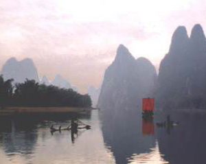
漓江
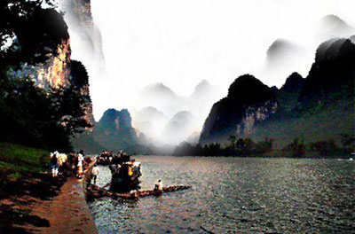
漓江风光
漓江是世界上风光最秀丽的河流之一。
漓江发源于“华南第一峰”桂北越城岭猫儿山，那是个林丰木秀，空气清新，生态环境极佳的地方。漓江上游主流称六峒河；南流至兴安县司门前附近，东纳黄柏江，西受川江，合流称溶江；由溶江镇汇灵渠水，流经灵川、桂林、阳朔，至平乐,长160公里，称漓江。
漓江两岸的山峰伟岸挺拔，形态万千，石峰上多长有茸茸的灌木和小花，远远看去，若美女身上的衣衫。江岸的堤坝上，终年碧绿的凤尾竹，似少女的裙裾，随风摇曳，婀娜多姿。最可爱是山峰倒影，几分朦胧，几分清晰。江面渔舟几点，红帆数页，从山峰倒影的画面上流过，真有“船在青山顶上行”的意境。百里漓江的每一处景致，都是一幅典型的中国水墨画。
漓江自桂林至阳朔83公里水程，是广西东北部喀斯特地形发育最典型的地段。桂林市附近，河谷开阔、平缓，伏波山、叠彩山、象山、穿山、塔山等皆平地拔起，四壁如削，奇峰罗列，气势万千。岩溶槽谷平原中，秀山丽水相辉，景色清幽。桂林至阳朔之间，是岩溶峰林峰丛地貌，河流依山而转，形成峡谷，景致也最迷人，尤以草坪、杨堤、兴坪为胜，有浪石奇景、九马画山、黄布滩等美景。倒影是漓江一大奇观。江水赋予凝重的山以动态、灵性、生命，同时把人带进神话的世界。漓江兼有山青、水秀、洞奇、石美四绝，还有洲绿、滩险、潭深、瀑飞之胜。江中多洲，岸边多滩，乱石遏流，浪回波伏，茂树环合，翠竹竞秀。漓江景观并因时、因地（角度）、因气候不同而变化。晴朗天候，上下天光，一碧万顷，千峦百蟑，尽人眼帘。烟雨之日，岚雾缭绕，若隐若现，若断若续，一派空漾。明月之夜，群峰如洗，江波如练，若置身空灵境界，清远无限。雄奇瑰丽的百里江日长卷，使人赏心悦目，冶住陶情，净化心灵，弃俗绝尘。可以说：漓江神秀天下无。
漓江沿岸有古老而著名的灵川大圩、兴坪古镇，还有民居颇具中国特色的阳朔渔村。而漓江边的冠岩里，人们可乘车和乘船游览地下河；漓江边，还有田畴栉比及山色空濛的草坪田园风光。
有人说，漓江是一首诗，一首让人“一见钟情”的爱情诗；有人说，漓江是一幅画，一幅“山清清，水碧碧，青山绿水韵依依”的中国画。我说，漓江是一个奇迹，是造物主创造的集美之大成的一个奇迹。
走进漓江，一醉方休！
红水河七百弄
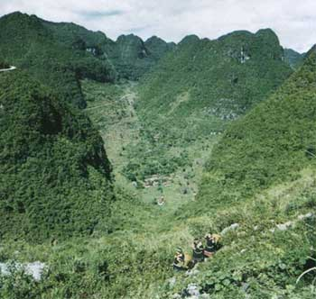
红水河七百弄风景名胜区位于广西中部偏西的大化瑶族自治县境内，1996年7月，以山奇、水秀、湖旷、洞秘、峡险、洼深、坝雄和瑶族民族风情独特等八大特点，荣获全国首届风景名胜区展览会奖。
七百弄“是世界上喀斯特高峰丛深洼地发育最典型的地区，具有世界自然遗产等级”（中科院李吉钧院士等专家组）。该区251平方公里的石山中，海拔800—1000米的峰丘5000多座；1300多个洼地（当地人称“弄场”）中，有324个原始古朴的瑶寨分布点缀于底部；在观景公路上，可仰视高约300米的高峰丛，俯视深200—300米的洼地，真如“世外桃源”。
大化—古河 42公里的红水河段，人称“八十里画廊”，是大化水电站建成后形成的宽300—500米的峡谷水库。四季可泛舟观赏两岸的奇山秀水，壮村瑶寨，红花、翠竹、柑桔、龙眼园林延绵不绝地展现，行舟期间，船移景换，使人赏心悦目。舍舟登岸，可游览古河仙女洞。
岩滩湖区为国家“八五”重点工程岩滩水电站建成后形成的56平方公里的湖面水库。一百多个孤岛和半岛，形态各异；壮瑶村居枕山面水，星罗棋布。16公里的红水河三峡，峰险山峻、谷幽崖奇。更有那睡美人山，雄狮守水城和神鹰守峡等象形山栩栩如生、形态动人。
加拿大皇家学会院士、前国际洞穴协会主席D·福特教授认为： “穿越红水河平原和七百弄喀斯特地区的考察是最好的旅游”。
五排河漂流
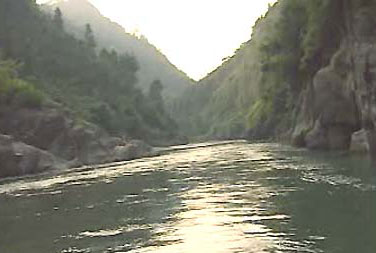
五排河位于桂林市西北部的资源县，华南第一峰猫儿西南麓，发源于海拔1883米的金紫山，是资源县境内第二大河，流经车田、两水、河口三个民族乡后，滔滔西去，汇入柳江，最后流入珠江，属珠江水系。
经有关部门和专家多次考察后认定，五排河最具有旅游开发价值的河段，是自车田乡政府所在地的车田至河口乡政府所在地的河口这一30余公里的河段。峡深谷幽，滩险流急，山高石奇，两岸风光优美，民俗风情浓郁，给来五排河漂流探险的游客留下深刻印象。
乘竹筏或橡皮船漂流五排河，简直就是置身于幽谷探秘。弯多，山陡、林深、谷幽，一切尘世间的喧嚣顿然销声匿迹，江流把人带进了一个古朴、原始的纯自然境界。
五排河河面宽5至30米，上下游落差近300米，映入眼帘的是一条又一条，几乎连成一体的急流险滩，漂流探险，橡舟飞流直下，排空的白浪迎面击来，橡舟上下翻飞，左冲右突，入滩前一身干爽爽的，出滩后即成了湿漉漉的。汹涌澎湃的五排河，犹如一头脱缰的烈马，在深山幽谷中腾挪驰骋。只要不畏险阻，一往无前，游人最终就能驯服这匹桀骜不羁的烈马，成为驾驭这匹烈马的骑士。
到五排河探险觅胜，那古莽苍源，那惊险刺激，足以让凡人变作英雄，让懦夫变成勇士，更使人享受到征服自然的无穷乐趣。
2001年3月2日，中国激流回旋皮划艇国家集训队主教练曹雅民代表国家体育总局水上运动中心对五排河是否具备国家级训练基地的条件进行了实地考察。考察完毕后曹教训抑制不住兴奋地说：“从激流回旋项目的集训和比赛场地所要求具备的条件来看，目前可以说五排河是国内最好的，我们苦苦寻觅了3年，想不到在桂林资源还有这么好的一个场地。” 他还说：“无论对训练还是比赛，这都是一个不可多得的场地，全程30公里河道，落差达200多米，无论是规模还是落差在国内都是最大的，完全可以满足激流回旋6级到1级训练技术标准的需求，也符合世界性比赛的条件，有几处甚至达到了供世界A级（最高级）比赛场地的要求。
巴马盘阳河风光
——梦皈依的地方
李军 著、摄影．---- 广西画报 1999.7.
盘阳河发源于东兰、巴马、凤山三县交界处的水源洞附近，生态环境纯净优美，巴马是世界公认的长寿之乡，长寿人口比例居南美厄瓜多尔的比尔卡班巴、巴基斯坦的丰扎、前苏联的高加索、日本的富士山等世界著名长寿地域之首。巴马的长寿老人多栖居在盘阳河流域一带。
天与地
铿锵激昂的召唤
涤荡消解世俗一切伪饰及污垢
烟云起时
千百年的传说鲜活展露
却是无望破解的玄机此间
风是无羁的自由
风不踟躅
有云相随
山是永存的伟岸
山不孤寂
与水为邻
山水温暖，温暖山水
只是野性的音符挂满薄薄的天幕
时光不歇嬗变
血肉之躯在迷蒙的旅程中往复徙迁
无尽依恋与倾诉
只流露自
一曲清幽素淡的民谣
积尘封不住的记忆
夜最深沉处永不老去
我梦皈依
广 西 海 洋
广西南临北部湾，北部湾是南海西北部一个天然的半封闭海湾，面积为12.93万平方公里，平均水深38米，最大水深100米。环北部湾地区包括广西南部、广东雷州半岛、海南西部以及越南北部。广西沿海有众多岛屿，在岛屿的局部海岸，分布着珊瑚礁，这片海域区位优越、资源丰富，形成广西的生物海岸。
“海篇”real
以夸张动感的画面，强劲有力的节奏展示宽阔的视野
天下第一滩-北海银滩
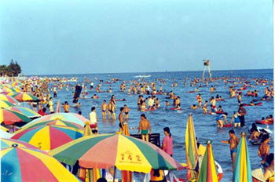
北海银滩国家旅游度假区，位于北海市东南面，离北海市中心10余公里。
北海银滩沙细如粉、色泽如银、绵延24公里，宽300——7000米不等，平缓无礁，水质洁净清澈，是世界上少有的洁净、广阔的海滩。由于海水退潮快，涨潮慢，沙滩自净能力强，游泳安全系数高，享有“南方北戴河”、“天下第一滩”、“东方夏威夷”的美誉。
北海银滩“滩长平，沙细白，水温净，浪柔软，无鲨鱼”，可容纳国际上最大规模的沙滩运动娱乐项目和海上运动娱乐项目，是我国南方最理想的滨海浴场和海上运动场所。这里的常年水温在15℃－30℃之间，是个理想的天然浴场。
由于北海银滩的沙滩由高品位的石英砂堆积而成，在阳光的照射下，洁白、细腻的沙滩会泛出银光，故称银滩。石英砂是制造玻璃、搪瓷、光学仪器等工业品的上好原料，因此，有人说“北海人脚下踩着一只金饭碗!”
银滩周围环境幽美。植树林荫，草地茵绿，中西建筑争妍比美，亭台楼阁别有情趣。五颜六色的太阳伞象朵朵鲜花点缀滩上，使人大有“翠色锦屏秀，碧玉水中照” 之感。
万尾金滩
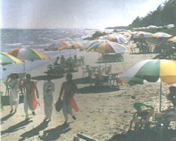
金滩位于东兴万尾岛西面连至乌头岛西南面，面积约有25平方公里，因沙色金黄而得此名。
每当潮水退下，湿漉漉的十里沙滩上，潮纹隐现，珠玑遍地，各种各样的 海滩动物纷纷“崭露头角”，大大小小的螃蟹横行无忌。常常能看到头戴金色 葵叶帽，身穿彩衣的京族妇女的身影。她们集中精力，弯腰注视，一看便知道海沙底下隐藏着沙虫，紧接着，便飞快地将铁楸一插一翻，沙虫便手到擒来，整 个过程一气呵成，动作十分利索，还没让人看清楚，沙虫已被她抓进娄里了！
海滩上有一种风蟹，熟称“沙马”，营养价值极高，有一只海马一只鸡之说，沙马挖沙洞而居，洞口有一堆松沙，它的洞曲来弯去，有时挖几下即不知洞道所向。沙马跑得极快，追捕沙马是极好的沙滩运动！
万尾金滩上风平浪静，宜于玩海，远处水天一色，舟帆点点，大可入画，岸边有长达数十公里的环岛大堤，沿堤遍植林木，漫步林中，清爽宜人，别有情趣！
山口红树林保护区
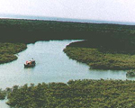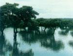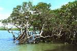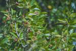
山口红树林生态自然保护区是中国第二个国家级的红树林自然保护区。
红树林是热带、亚热带海湾、河口泥滩上特有的常绿灌木和小乔木群落。这里风力较弱，潮汐缓和，利于海潮和内河带来的泥沙及碎屑物的沉积，形成适宜红树林生长的生态环境。红树林具有呼吸根或支柱根，种子可以在树上的果实中萌芽长成小苗，然后再脱离母株，坠落于淤泥中发育生长。小苗掉在海水中即使被海浪；中走，也能随波逐流，数月不死，一遇泥沙，数小时后即可生根成长。红树林生态系是世界上最富多样性、生产力最高的海洋生态系之一。林繁叶茂的红树林不仅为海洋生物和鸟类提供了一个理想的栖息环境，而且以其大量的凋落物为之提供了车宣的食物来源，从而形成并维持着一个食物链关系复杂的高生产力生态系统。
位于广西合浦县东南部沙田半岛的山口红树林生态自然保护区，是北回归线以南热带红树林生态系的代表。它由该半岛东侧和西侧的海域、陆域及全部滩涂组成，总面积80平方公里，岸线总长50公里。东侧是火山灰发育的土壤，滩涂淤泥肥沃，红树林生长特别茂盛。西岸滩涂全为淤泥质，适宣红树林生长。而且保护区所处地理位置光热条件较好，冬季低温影响小，海湾侵入内陆，封闭性好，风浪、潮汐、余流的作用较弱，岸滩比较稳定，海水污染程度很低，水质洁净，是红树林大面积分布和生存的理想区域，构成良好的生态系统。这里是我国大陆海岸发育较好、连片较大、结构典型、保存较好的天然红树林分布区。自从这里建立红树林生态自然保护区以后，数万亩红树林生机勃勃。众多的鸟群在此栖息，有的还是珍贵鸟类，堪称名副其实的“鸟类天堂”。凌晨，鸟鸣声从四面传来，此起彼伏，叫人数不清到底有多少“咏晨歌手”在合唱。太阳初升，白鹭扇动着雪白的翅膀，向东南方向飞去；日轮西沉，林中苍鹭东岸呼西岸应，红树林中呈现着“千鹭鸣红林”的壮观场面。
英罗港分区是连片的红树林，红树高大挺拔，底部盘根错节，十分壮观，在我国极为罕见。这里是保护区的核心区之亿。1992年3月，马鞍半岛建立了园林式的管理站，高处修筑了凉亭，国家海洋局和广西壮族自治区政府共同在这里树立了“国家级山口红树林生态自然保护区”区碑。这些建筑已构成美丽的景点。随着保护区的建立，提高了北海市和合浦县的知名度。几年来，人们络绎不绝地慕名来到英罗参观和考察。红树林素有“海中森林”之称，为热带海岸独有的地理景观，与其他海岸风光比较自有一种截然不同的别致风情，是我国稀有的旅游资源，可发展海滨风光生态旅游。现在北海市已将保护区列为主要观光旅游点之一。
涠洲岛
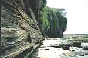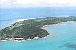
北海市拥有广西最大的海岛涠洲岛。涠洲岛位于北海半岛东南面36海里处，由南至北长65公里，由东至西宽6公里，最高海拔79米，是我国最大最年轻的火山岛。岛上住有2000多户人家，16000多人口，85%以上都是客家人，岛上不但气候宜人，资源丰富，风光秀丽，景色迷人，四季如春，气候温暖湿润，富含负氧离子的空气清新宜人，具备世界旅游界向注的“三S(海水sea、阳光sun、沙滩sand的旅游资源十分丰富的岛屿；故素有“大蓬莱”仙岛之称。
在高空鸟瞰，面积为25平方公里的涠洲岛犹如一枚翡翠漂浮于湛蓝的大海中。踏上这座火山岛，撞入眼帘的是奇特的海蚀海积地貌与火山熔岩景观—— 猪仔岭憨态可掬，鳄鱼石栩栩如生，滴水岩泉水叮咚，红色火山岩好象刚刚喷发过……位于盛堂村的法国天主教堂，更是在19世纪末就落户岛上，材料全部取于岛上的珊瑚、岩石，历经百年岁月，依然坚固如初。四百多年前，明代著名戏剧家汤显祖游览该岛，写下“日射涠洲廓，风斜别岛洋”的诗句。
如今，涠洲岛被列为省级旅游度假区，每天均有游轮迎送客人，岛上绿荫掩映，陡壁幽洞，怪礁奇岩，黄沙碧浪，景物奇美。主要景点有滴水屏、龟豕拱碧、仙人洞、贼佬洞、羊咩洞、珊瑚滩，以及三婆庙、圣母庙、天主教堂等。岛上还建有各种娱乐设施，是海岛探幽，海上垂钓、浴海拾贝、潜水探奇的极好去处。登临“南国蓬莱”——涠洲岛，远眺海上日出日落的壮丽景观，探索一万年前火山喷发留下的熔岩奇观和海蚀海积地貌，潜水海底观赏璀璨夺目的珊瑚丛，听听客家妇女在哥特风格教堂里颂唱《圣经》，您就会发古人之幽思，叹大自然之神奇。与涠洲岛相距9海里的斜阳岛，面积只有1.89平方公里，奇木茂密、怪石嶙峋、静谧安详。